计算机网络第5章：传输层
1 传输层协议概述
1.1 进程之间的通信
从通信和信息处理的角度看，运输层向它上面的应用层提供通信服务，它属于面向通信部分的最高层，同时也是用户功能中的最低层。
当网络的边缘部分中的两个主机使用网络的核心部分的功能进行端到端的通信时，只有位于网络边缘部分的主机的协议栈才有运输层，而网络核心部分中的路由器在转发分组时都只用到下三层的功能。
运输层为相互通信的应用进程提供了逻辑通信：
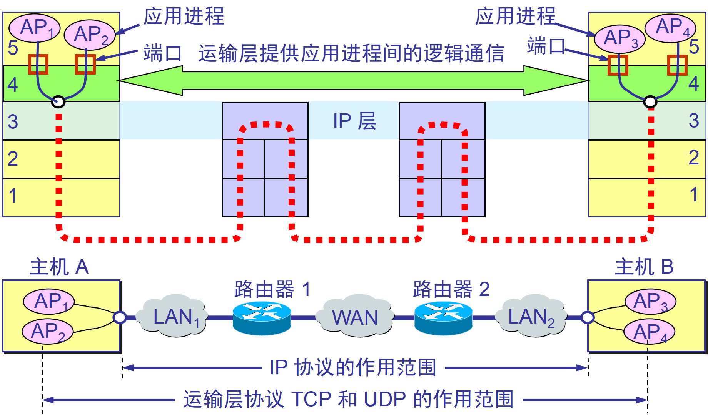
1.1.1 应用进程之间的通信
两个主机进行通信实际上就是两个主机中的应用进程互相通信。
应用进程之间的通信又称为端到端的通信。
运输层的一个很重要的功能就是复用和分用。应用层不同进程的报文通过不同的端口向下交到运输层，再往下就共用网络层提供的服务。
“运输层提供应用进程间的逻辑通信”。“逻辑通信”的意思是：运输层之间的通信好像是沿水平方向传送数据。但事实上这两个运输层之间并没有一条水平方向的物理连接。
运输层协议和网络层协议的主要区别：
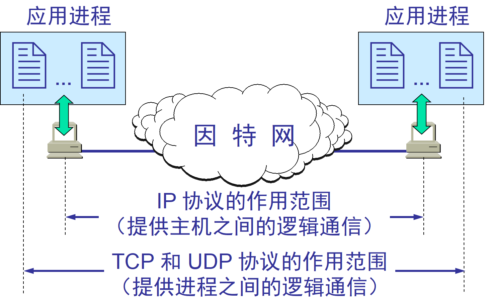
在运输层有一个很重要的功能——复用和分用。
- 复用是指发送方不同的应用进程都可以使用同一个运输层协议传送数据
- 分用是指接收方的运输层在剥去报文的首部后能够把这些数据正确交付目的应用进程
1.1.2 运输层的主要功能
-
运输层为应用进程之间提供端到端的逻辑通信（但网络层是为主机之间提供逻辑通信）。
-
运输层还要对收到的报文进行差错检测。
运输层需要有两种不同的运输协议，即面向连接的 TCP 和无连接的 UDP。
运输层向高层用户屏蔽了下面网络核心的细节（如网络拓扑、所采用的路由选择协议等），它使应用进程看见的就是好像在两个运输层实体之间有一条端到端的逻辑通信信道。
- 当运输层采用面向连接的 TCP 协议时，尽管下面的网络是不可靠的（只提供尽最大努力服务），但这种逻辑通信信道就相当于一条全双工的可靠信道。
- 当运输层采用无连接的 UDP 协议时，这种逻辑通信信道是一条不可靠信道。
1.2 运输层的两个主要协议
TCP/IP 的运输层有两个不同的协议：
-
用户数据报协议 UDP (User Datagram Protocol)
-
传输控制协议 TCP (Transmission Control Protocol)
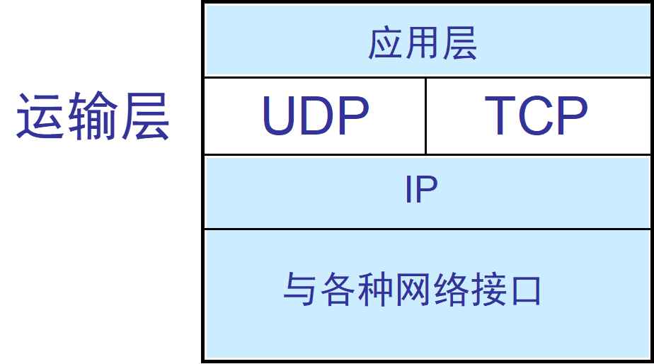
两个对等运输实体在通信时传送的数据单位叫作运输协议数据单元 TPDU (Transport Protocol Data Unit)。
TCP 传送的数据单位协议是 TCP 报文段（segment）。
UDP 传送的数据单位协议是 UDP 报文或用户数据报。
- UDP 在传送数据之前不需要先建立连接。对方的运输层在收到 UDP 报文后，不需要给出任何确认。虽然 UDP不提供可靠交付，但在某些情况下 UDP 是一种最有效的工作方式。
- TCP 则提供面向连接的服务。TCP 不提供广播或多播服务。由于 TCP 要提供可靠的、面向连接的运输服务，因此不可避免地增加了许多的开销。这不仅使协议数据单元的首部增大很多，还要占用许多的处理机资源。
运输层的 UDP 用户数据报与网际层的IP数据报有很大区别。IP 数据报要经过互连网中许多路由器的存储转发，但 UDP 用户数据报是在运输层的端到端抽象的逻辑信道中传送的。
TCP 报文段是在运输层抽象的端到端逻辑信道中传送，这种信道是可靠的全双工信道。但这样的信道却不知道究竟经过了哪些路由器，而这些路由器也根本不知道上面的运输层是否建立了 TCP 连接。
1.3 运输层的端口
运行在计算机中的进程是用进程标识符来标志的。
运行在应用层的各种应用进程却不应当让计算机操作系统指派它的进程标识符。这是因为在因特网上使用的计算机的操作系统种类很多，而不同的操作系统又使用不同格式的进程标识符。
为了使运行不同操作系统的计算机的应用进程能够互相通信，就必须用统一的方法对 TCP/IP 体系的应用进程进行标志。
由于进程的创建和撤销都是动态的，发送方几乎无法识别其他机器上的进程。有时我们会改换接收报文的进程，但并不需要通知所有发送方。
我们往往需要利用目的主机提供的功能来识别终点，而不需要知道实现这个功能的进程是哪一个（例如，要和互联网上某个邮件服务器联系，但并不一定要知道这个服务器功能是由目的主机的哪个进程实现的）。
当应用层要发送数据时，应用进程就把数据发送到适当的端口，然后运输层从该端口读取数据，进行后续的处理（把数据发送到目的主机）。当运输层收到来自对方主机的户据时，就把数据发送到适当的端口，然后应用进程就从该端口读取数据。因此，端口必须有一定容量的缓存来暂时存放数据。
1.3.1 端口号
解决这个问题的方法就是在运输层使用协议端口（protocol port number），或通常简称为端口（port）。
虽然通信的终点是应用进程，但我们可以把端口想象是通信的终点，因为我们只要把要传送的报文交到目的主机的某一个合适的目的端口，剩下的工作（即最后交付目的进程）就由 TCP 来完成。
端口用一个 16 位端口号进行标志。
端口号只具有本地意义，即端口号只是为了标志本计算机应用层中的各进程。在因特网中不同计算机的相同端口号是没有联系的。
1.3.2 软件端口与硬件端口
- 在协议栈层间的抽象的协议端口是软件端口。
- 路由器或交换机上的端口是硬件端口。
硬件端口是不同硬件设备进行交互的接口，而软件端口是应用层的各种协议进程与运输实体进行层间交互的一种地址。
1.3.3 三类端口
- 熟知端口，数值一般为 0~1023。
- 登记端口号，数值为1024~49151，为没有熟知端口号的应用程序使用的。使用这个范围的端口号必须在 IANA 登记，以防止重复。
- 客户端口号或短暂端口号，数值为49152~65535，留给客户进程选择暂时使用。当服务器进程收到客户进程的报文时，就知道了客户进程所使用的动态端口号。通信结束后，这个端口号可供其他客户进程以后使用。
2 用户数据报协议 UDP
2.1 UDP 概述
UDP 只在 IP 的数据报服务之上增加了很少一点的功能，即
- 端口的功能
- 差错检测的功能
虽然 UDP 用户数据报只能提供不可靠的交付，但 UDP 在某些方面有其特殊的优点。
2.1.1 UDP 的主要特点
-
UDP 是无连接的，即发送数据之前不需要建立连接，减少了开销。
-
UDP 使用尽最大努力交付，即不保证可靠交付，同时也不使用拥塞控制。
-
UDP 是面向报文的。
发送方 UDP 对应用程序交下来的报文，在添加首部后就向下交付 IP 层。UDP 对应用层交下来的报文，既不合并，也不拆分，而是保留这些报文的边界。
应用层交给 UDP 多长的报文，UDP 就照样发送，即一次发送一个报文。
接收方 UDP 对 IP 层交上来的 UDP 用户数据报，在去除首部后就原封不动地交付上层的应用进程，一次交付一个完整的报文。
应用程序必须选择合适大小的报文。
-
UDP 没有拥塞控制，很适合多媒体通信的要求。
-
UDP 支持一对一、一对多、多对一和多对多的交互通信。
-
UDP 的首部开销小，只有 8 个字节。，比TCP的20字节要短。
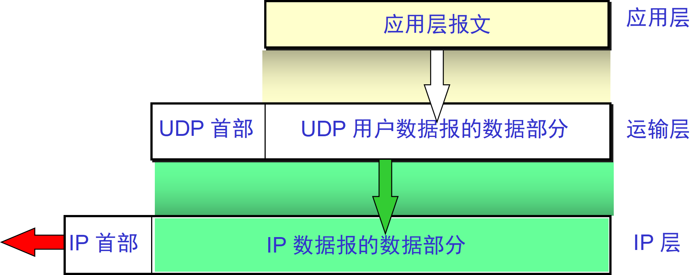
2.2 UDP 的首部格式
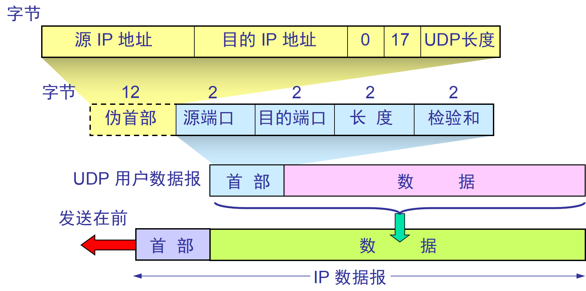
用户数据报 UDP 有两个字段：数据字段和首部字段。
首部字段有 8 个字节，由 4 个字段组成，每个字段都是两个字节。
2.2.1 计算 UDP 检验和
在计算检验和时，临时把“伪首部”和 UDP 用户数据报连接在一起。伪首部仅仅是为了计算检验和。
UDP把首部和数据一起都校验，若UDP用户数据报不是偶数个字节，则要填入一个全0字节（此字节不发送）。然后按照二进制反码计算出这些16位字的和。
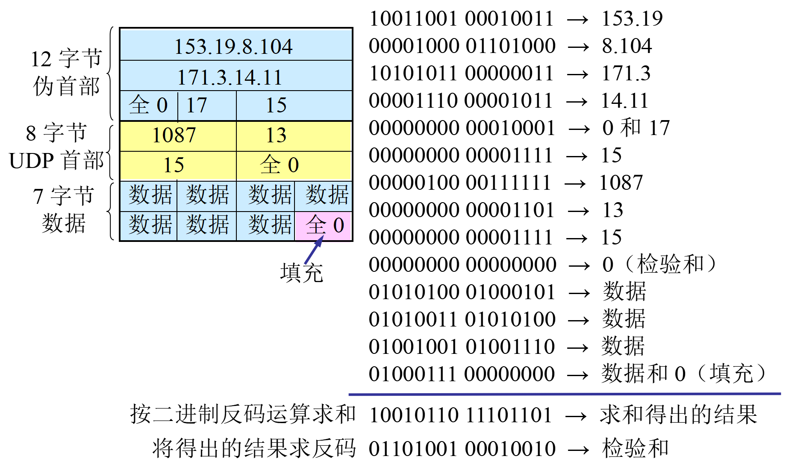
不难看出，这种简单的差错检验方法的检错能力并不强，但它的好处是简单，处理起来较快。
3 传输控制协议 TCP
3.1 TCP 最主要的特点
- TCP 是面向连接的运输层协议，在通信之间要先建立连接，通信之后要释放连接。
- 每一条 TCP 连接只能有两个端点(endpoint)，每一条 TCP 连接只能是点对点的（一对一）。
- TCP 提供可靠交付的服务。通过TCP连接传送的数据，无差错、不丢失、不重复，并且按序到达。
- TCP 提供全双工通信。TCP允许通信双方的应用进程在任何时候都能发送数据，TCP连接的两端都设有发送缓存和接受缓存，用来临时存放双向通信的数据。
- 面向字节流。TCP中的“流”指的是流入到进程或从进程流出的字节序列。TCP把应用进程交下来的数据仅仅看成一连串的无结构的字节流，TCP并不知道所传送的字节流的含义。
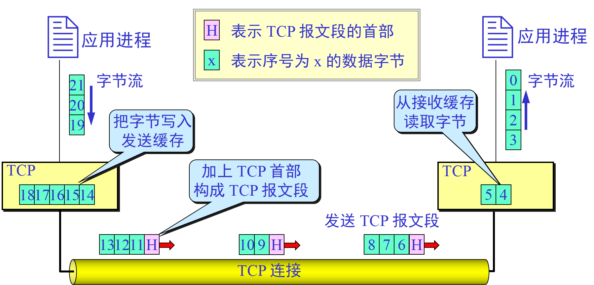
TCP 连接是一条虚连接而不是一条真正的物理连接。
TCP 对应用进程一次把多长的报文发送到TCP 的缓存中是不关心的。TCP 根据对方给出的窗口值和当前网络拥塞的程度来决定一个报文段应包含多少个字节（UDP 发送的报文长度是应用进程给出的）。
TCP 可把太长的数据块划分短一些再传送。TCP 也可等待积累有足够多的字节后再构成报文段发送出去。
3.2 TCP 的连接
TCP 把连接作为最基本的抽象。每一条 TCP 连接有两个端点。
TCP 连接的端点不是主机，不是主机的IP 地址，不是应用进程，也不是运输层的协议端口。TCP 连接的端点叫做套接字(socket)或插口。
端口号拼接到(contatenated with) IP 地址即构成了套接字。
每一条 TCP 连接唯一地被通信两端的两个端点（即两个套接字）所确定。即：
同一个IP地址可以有多个不同的TCP连接，而同一个端口号也可以出现在多个不同的TCP连接中。
3.2.1 同一个名词 socket有多种不同的意思
-
应用编程接口 API 称为 socket API, 简称为 socket。
-
socket API 中使用的一个函数名也叫作 socket。
-
调用 socket 函数的端点称为 socket。
-
调用 socket 函数时其返回值称为 socket 描述符，可简称为 socket。
-
在操作系统内核中连网协议的 Berkeley 实现，称为 socket 实现。
4 可靠传输的工作原理
4.1 停止等待协议
停止等待协议就是每发送完一个分组就停止发送，等待对方的确认。在收到确认后再发送下一个分组。
4.1.1 无差错情况
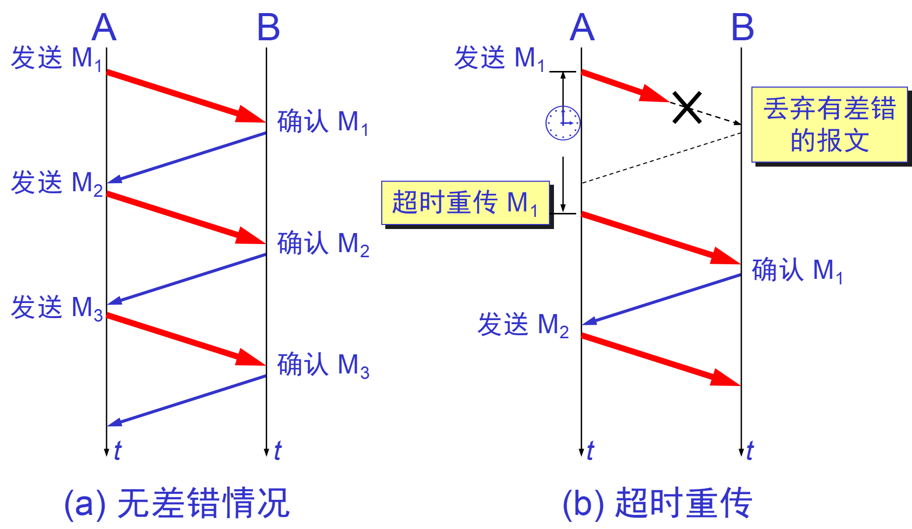
A只要超过了一段时间仍然没有收到确认，就认为刚才发送的分组丢失了，因为重传前面发送过的分组，这就是超时重传。因此需要设置一个超时计时器。
- 在发送完一个分组后，发送方必须暂时保留已发送的分组的副本。
- 分组和确认分组都必须进行编号。
- 超时计时器的重传时间应当比数据在分组传输的平均往返时间更长一些。
4.1.2 确认丢失和确认迟到
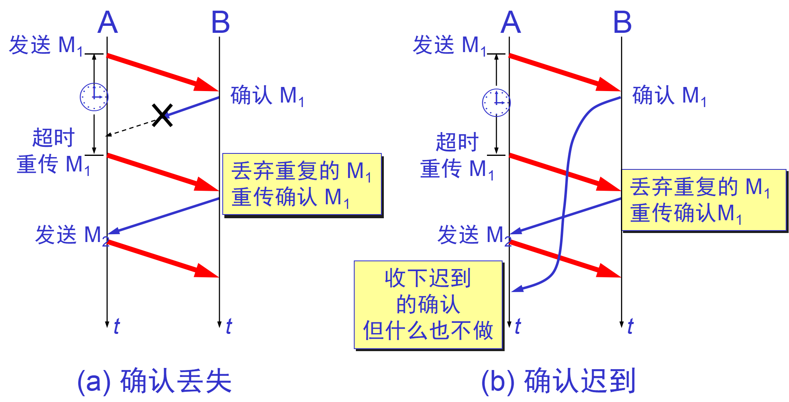
当B回复的确认M1丢失后，会收到重复的M1，这次应采取两个动作：
- 丢弃这个重复的分组M1，不向上层重复交付
- 向A发送确认
当A收到B回复的重复确认后，就收下进行丢弃，什么也不做。
使用上述的确认和重传机制，我们就可以在不可靠的传输网络上实现可靠的通信。
这种可靠传输协议常称为自动重传请求ARQ (Automatic Repeat reQuest)。ARQ 表明重传的请求是自动进行的。接收方不需要请求发送方重传某个出错的分组 。
4.1.3 信道利用率
停止等待协议的优点是简单，但缺点是信道利用率太低。
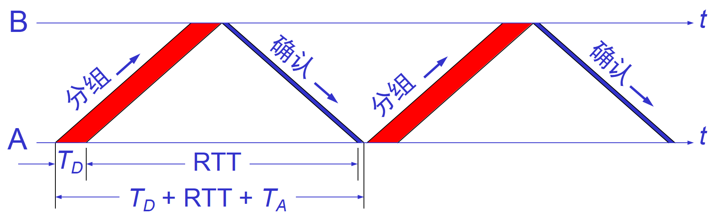
信道的利用率U计算如下：
上式的往返时间RTT取决于所使用的信道。例如，假定1200km的信道的往返时间RTT=20ms，分组长度是1200bit，发送速率是1Mbit/s。若忽略处理时间和Ta（Ta一般都远小于Td），则可算出信道的利用率U=5.66%。
但若把发送速率提高到10Mbit/s，则，信道在绝大多数时间内都是空闲的。
4.1.4 流水线传输
发送方可连续发送多个分组，不必每发完一个分组就停顿下来等待对方的确认。由于信道上一直有数据不间断地传送，这种传输方式可获得很高的信道利用率。
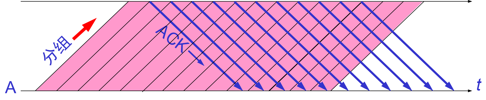
当使用流水线传输时，就要使用下面介绍的连续ARQ协议和滑动窗口协议。
4.2 连续 ARQ 协议
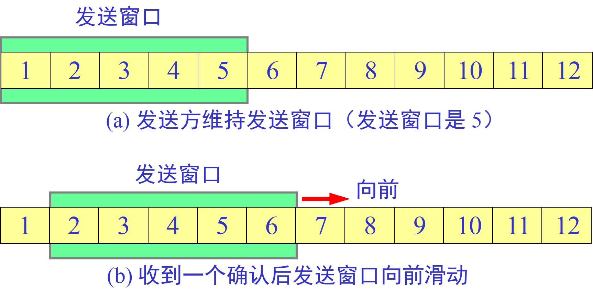
位于发送窗口内的5个分组都可以连续发送出去，而不需要等待对方的确认。
连续ARQ协议规定，发送方每收到一个确认，就把发送窗口向前滑动一个分组的位置。
接收方一般采用累积确认的方式。即不必对收到的分组逐个发送确认，而是对按序到达的最后一个分组发送确认，这样就表示：到这个分组为止的所有分组都已正确收到了。
累积确认的优点：容易实现，即使确认丢失也不必重传。缺点是：不能向发送方反映出接收方已经正确收到的所有分组的信息。
4.2.1 Go-back-N（回退 N）
如果发送方发送了前 5 个分组，而中间的第 3 个分组丢失了。这时接收方只能对前两个分组发出确认。发送方无法知道后面三个分组的下落，而只好把后面的三个分组都再重传一次。
这就叫做 Go-back-N（回退 N），表示需要再退回来重传已发送过的 N 个分组。
可见当通信线路质量不好时，连续 ARQ 协议会带来负面的影响。
5 TCP 报文段的首部格式
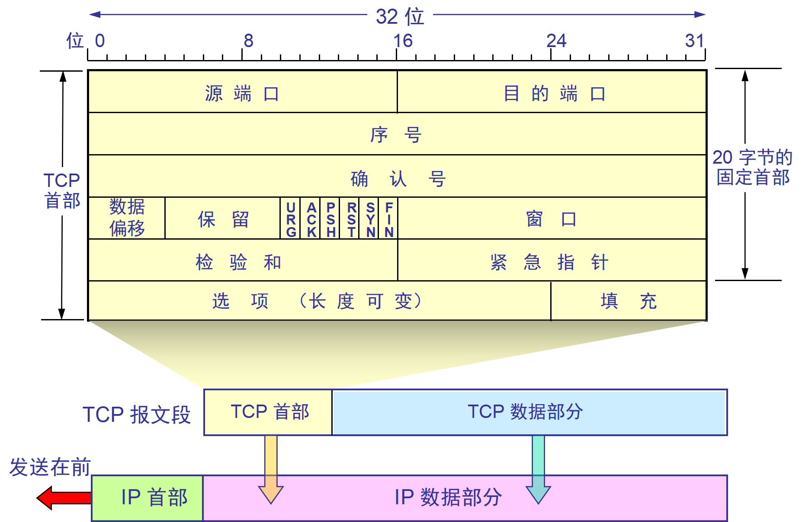
5.1 首部各个字段的含义
5.1.1 源端口和目的端口
各占 2 字节。端口是运输层与应用层的服务接口。
运输层的复用和分用功能都要通过端口才能实现。
5.1.2 序号
占 4 字节。TCP 连接中传送的数据流中的每一个字节都编上一个序号。
序号字段的值则指的是本报文段所发送的数据的第一个字节的序号。
5.1.3 确认号
占 4 字节，是期望收到对方的下一个报文段的数据的第一个字节的序号。
5.1.4 数据偏移（即首部长度）
占 4 位，它指出 TCP 报文段的数据起始处距离 TCP 报文段的起始处有多远。
“数据偏移”的单位是 32 位字（以 4 字节为计算单位）。
5.1.5 保留
占 6 位，保留为今后使用，但目前应置为0。
5.1.6 紧急 URG
当 URG = 1 时，表明紧急指针字段有效。它告诉系统此报文段中有紧急数据，应尽快传送(相当于高优先级的数据)。
5.1.7 确认 ACK
- 只有当 ACK = 1 时确认号字段才有效。
- 当 ACK = 0 时，确认号无效。
TCP规定,在连接建立后所有传送的报文段都必须把ACK置为１。
5.1.8 推送 PSH
当两个应用进程进行交互式的通信时,有时在一端的应用进程希望在键入一个命令后立即能够收到对方的响应，可以使用push操作。
接收 TCP 收到 PSH = 1 的报文段，就尽快地交付接收应用进程，而不再等到整个缓存都填满了后再向上交付。
虽然应用进程可以选择推送操作，但推送操作很少使用。
5.1.9 复位 RST
当 RST = 1 时，表明 TCP 连接中出现严重差错（如由于主机崩溃或其他原因），必须释放连接，然后再重新建立运输连接。
RST = 1还用来拒绝一个非法的报文段或拒绝打开一个连接，RST也可称为重建位或重置位。
5.1.10 同步 SYN
同步 SYN = 1 表示这是一个连接请求或连接接受报文。对方若同意建立连接，则应在响应的报文段中使用SYN = 1和ACK = 1。
5.1.11 终止 FIN
用来释放一个连接。FIN = 1 表明此报文段的发送端的数据已发送完毕，并要求释放运输连接。
5.1.12 窗口字段
占 2 字节，用来让对方设置发送窗口的依据，单位为字节。
窗口值告诉对方：本报文段首部中的确认号算起，接收方目前允许对方发送的数据量（以字节为单位）。
5.1.13 检验和
占 2 字节。检验和字段检验的范围包括首部和数据这两部分。在计算检验和时，要在 TCP 报文段的前面加上 12 字节的伪首部。
但把伪首部第4个字段中的17改为6（TCP的协议号为6）。
5.1.14 紧急指针
占 16 位，指出在本报文段中紧急数据共有多少个字节（紧急数据放在本报文段数据的最前面）。
5.1.15 选项
长度可变。TCP 最初只规定了一种选项，即最大报文段长度 MSS。MSS 告诉对方 TCP：“我的缓存所能接收的报文段的数据字段的最大长度是 MSS 个字节。”
5.1.16 其他选项
-
窗口扩大选项 ——占 3 字节，其中有一个字节表示移位值 S。新的窗口值等于TCP 首部中的窗口位数增大到(16 + S)，相当于把窗口值向左移动 S 位后获得实际的窗口大小。
-
时间戳选项——占10 字节，其中最主要的字段时间戳值字段（4 字节）和时间戳回送回答字段（4 字节）。
-
选择确认选项——在后面的 5.6.3 节介绍。
时间戳选项有以下两个功能：
- 用来计算往返时间RTT
- 用于处理TCP序号超过的情况，防止序号绕回PAWS。
6 TCP 可靠传输的实现
6.1 以字节为单位的滑动窗口
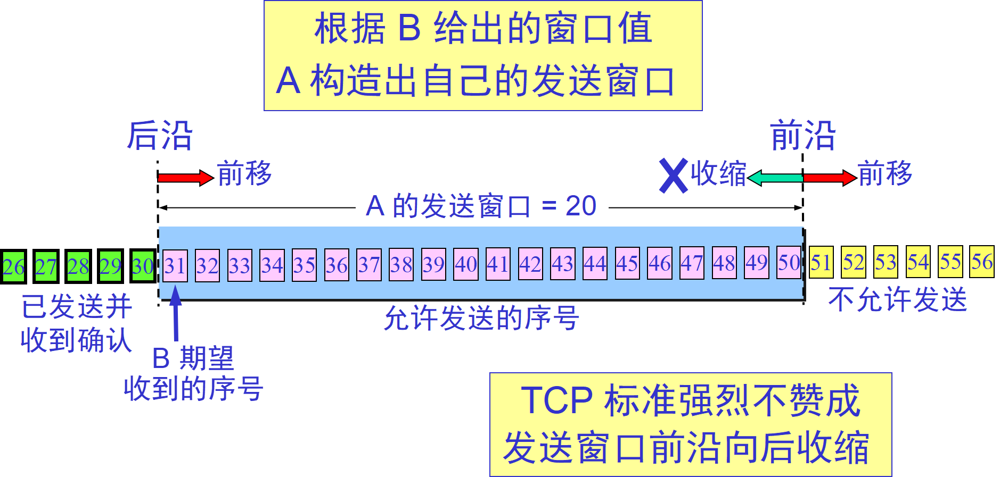
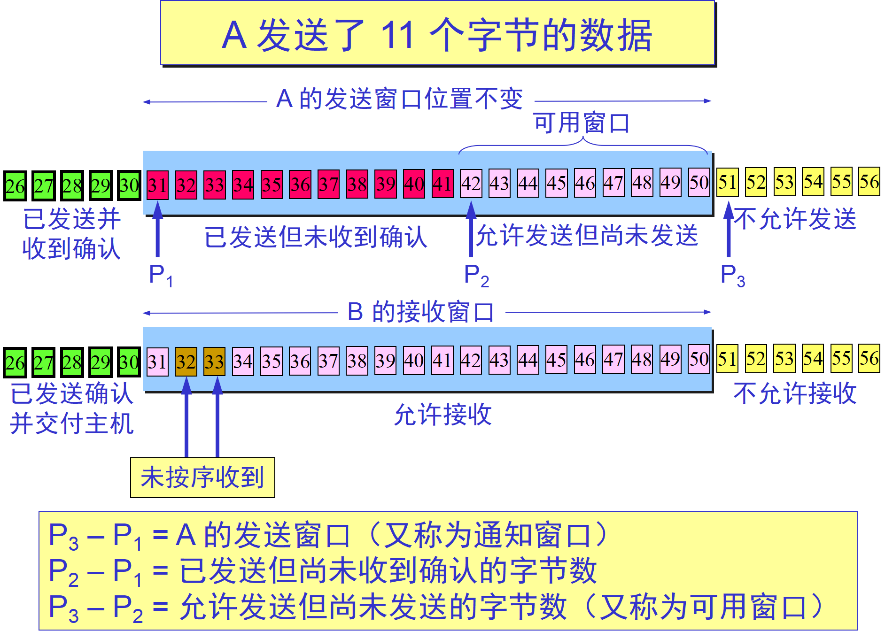
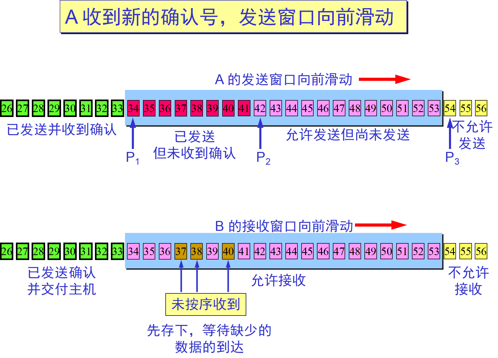
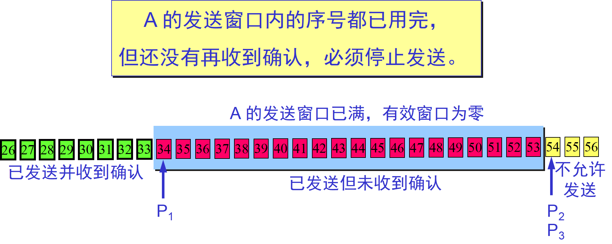
6.1.1 发送缓存
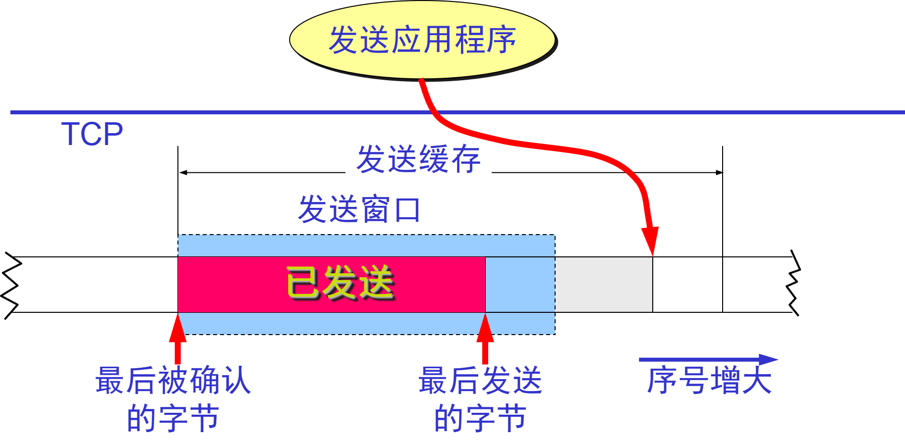
发送缓存用来存放：
- 发送应用进程传送给发送方TCP准备发送的数据
- TCP已发送但尚未收到确认的数据
6.1.2 接收缓存
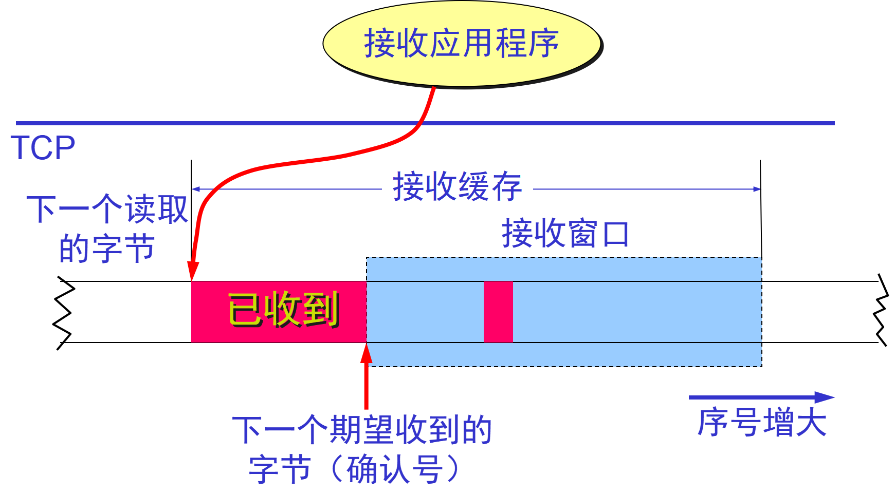
接收缓存用来暂时存放：
- 按序到达的、但尚未被接收应用程序读取的数据
- 不按序到达的数据
需要强调三点
-
A 的发送窗口并不总是和 B 的接收窗口一样大（因为有一定的时间滞后）。
-
TCP 标准没有规定对不按序到达的数据应如何处理。通常是先临时存放在接收窗口中，等到字节流中所缺少的字节收到后，再按序交付上层的应用进程。
-
TCP 要求接收方必须有累积确认的功能，这样可以减小传输开销。
TCP的通信是全双工通信，通信中的每一方都在发送和接受数据，因此每一方都有自己的发送窗口和接受窗口。
6.2 超时重传时间的选择
重传机制是 TCP 中最重要和最复杂的问题之一。
TCP 每发送一个报文段，就对这个报文段设置一次计时器。只要计时器设置的重传时间到但还没有收到确认，就要重传这一报文段。
由于 TCP 的下层是一个互联网环境，IP 数据报所选择的路由变化很大。因而运输层的往返时间的方差也很大。
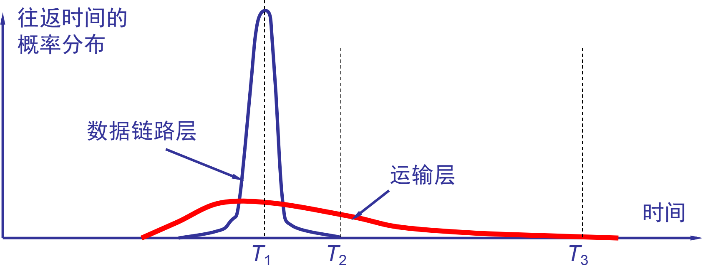
TCP采用了一种自适应算法，它记录一个报文段发出的时间，以及收到响应的确认的时间，这两个时间之差就是报文段的往返时间RTT。
6.2.1 加权平均往返时间 RTTS
TCP 保留了 RTT 的一个加权平均往返时间 RTTS（又称为平滑往返时间）。
第一次测量到 RTT 样本时，RTTS 值就取为所测量到的 RTT 样本值。以后每测量到一个新的 RTT 样本，就按下式重新计算一次 RTTS：
式中，。若 α 很接近于零，表示 RTT 值更新较慢。若选择 α 接近于 1，则表示 RTT 值更新较快。RFC 2988 推荐的 α 值为 1/8，即 0.125。
6.2.2 超时重传时间RTO
显然RTO应该略大于上面得到的RTTs，RFC 2988 建议使用下式计算 RTO：
- RTTD是RTT 的偏差的加权平均值。
RFC 2988 建议这样计算 RTTD。第一次测量时，RTTD 值取为测量到的 RTT 样本值的一半。在以后的测量中，则使用下式计算加权平均的 RTTD：
- β 是个小于 1 的系数，其推荐值是 1/4，即 0.25。
6.2.3 Karn 算法
TCP 报文段没有收到对应的确认，则重传，之后收到了确认报文段 ACK。
那么，问题是：该确认报文段 ACK报文段的确认，还是对其重传报文段的确认呢 ？
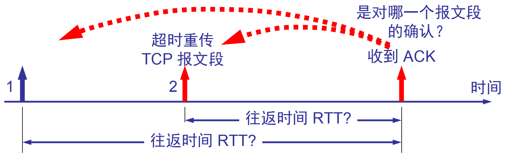
采用Karm算法，即在计算平均往返时间 RTT 时，只要报文段重传了，就不采用其往返时间样本。这样得出的加权平均平均往返时间 RTTS 和超时重传时间 RTO 就较准确。
6.2.4 修正的 Karn 算法
但是如果报文段的时延突然增大了很多，如果报文段重传了而不采用其往返时间样本，无法更新超时重传时间。
报文段每重传一次，就把 RTO 增大一些：
- 系数 γ 的典型值是 2 。
当不再发生报文段的重传时，才根据报文段的RTT更新RTTS 和RTO 。实践证明，这种策略较为合理。
6.3 选择确认 SACK
接收方收到了和前面的字节流不连续的两个字节块。
如果这些字节的序号都在接收窗口之内，那么接收方就先收下这些数据，但要把这些信息准确地告诉发送方，使发送方不要再重复发送这些已收到的数据。
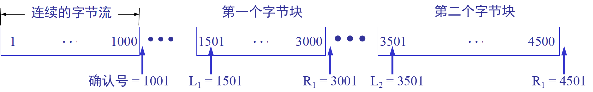
和前后字节不连续的每一个字节块都有两个边界：左边界和右边界。图中用四个指针标记这些边界。
-
第一个字节块的左边界 L1 = 1501，但右边界 R1 = 3001。
左边界指出字节块的第一个字节的序号，但右边界减 1 才是字节块中的最后一个序号。
-
第二个字节块的左边界 L2 = 3501，而右边界 R2 = 4501。
如果要使用选择确认，那么在建立 TCP 连接时，就要在 TCP 首部的选项中加上“允许 SACK”的选项，而双方必须都事先商定好。
如果使用选择确认，那么原来首部中的“确认号字段”的用法仍然不变。只是以后在 TCP 报文段的首部中都增加了 SACK 选项，以便报告收到的不连续的字节块的边界。
由于首部选项的长度最多只有 40 字节，而指明一个边界就要用掉 4 字节，因此在选项中最多只能指明 4 个字节块的边界信息。
7 TCP 的流量控制
7.1 利用滑动窗口实现流量控制
一般说来，我们总是希望数据传输得更快一些。但如果发送方把数据发送得过快，接收方就可能来不及接收，这就会造成数据的丢失。
流量控制（flow control）就是让发送方的发送速率不要太快，既要让接收方来得及接收，也不要使网络发生拥塞。
利用滑动窗口机制可以很方便地在 TCP 连接上实现流量控制。
7.1.1 流量控制举例
A 向 B 发送数据。
在连接建立时，B 告诉 A：“我的接收窗口 rwnd = 400（字节）”。
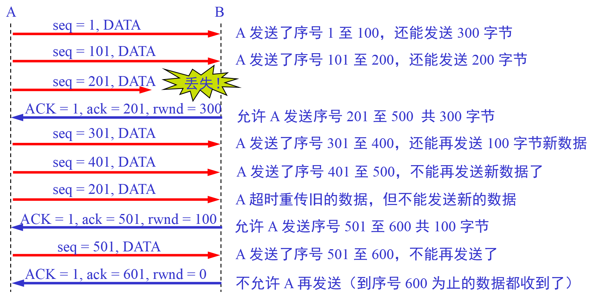
8 TCP的拥塞控制
8.1 拥塞控制的一般原理
在某段时间，若对网络中某资源的需求超过了该资源所能提供的可用部分，网络的性能就要变坏——产生拥塞(congestion)。
出现资源拥塞的条件：
对资源需求的总和 > 可用资源
若网络中有许多资源同时产生拥塞，网络的性能就要明显变坏，整个网络的吞吐量将随输入负荷的增大而下降。
拥塞控制是很难设计的，因为它是一个动态的（而不是静态的）问题。
当前网络正朝着高速化的方向发展，这很容易出现缓存不够大而造成分组的丢失。但分组的丢失是网络发生拥塞的征兆而不是原因。
在许多情况下，甚至正是拥塞控制本身成为引起网络性能恶化甚至发生死锁的原因。这点应特别引起重视。
8.1.1 开环和闭环控制
- 开环控制方法就是在设计网络时事先将有关发生拥塞的因素考虑周到，力求网络在工作时不产生拥塞。
- 闭环控制是基于反馈环路的概念。属于闭环控制的有以下几种措施：
监测网络系统以便检测到拥塞在何时、何处发生。- 将拥塞发生的信息传送到可采取行动的地方。
- 调整网络系统的运行以解决出现的问题。
8.1.2 拥塞控制与流量控制的关系
拥塞控制所要做的都有一个前提，就是网络能够承受现有的网络负荷。
拥塞控制是一个全局性的过程，涉及到所有的主机、所有的路由器，以及与降低网络传输性能有关的所有因素。
流量控制往往指在给定的发送端和接收端之间的点对点通信量的控制。
流量控制所要做的就是抑制发送端发送数据的速率，以便使接收端来得及接收。
8.2 TCP的拥塞控制方法
TCP进行拥塞控制的算法有四种：慢开始、拥塞避免、快重传和快恢复。
8.2.1 慢开始
发送方维持一个叫做拥塞窗口 cwnd（congestion window）的状态变量。拥塞窗口的大小取决于网络的拥塞程度，并且动态地在变化。发送方让自己的发送窗口等于拥塞窗口。如再考虑到接收方的接收能力，则发送窗口还可能小于拥塞窗口。
发送方控制拥塞窗口的原则是：只要网络没有出现拥塞，拥塞窗口就再增大一些，以便把更多的分组发送出去。但只要网络出现拥塞，拥塞窗口就减小一些，以减少注入到网络中的分组数。
8.2.1.1 慢开始算法的原理
-
在主机刚刚开始发送报文段时可先设置拥塞窗口 cwnd = 1，即设置为一个最大报文段 MSS 的数值。
-
在每收到一个对新的报文段的确认后，将拥塞窗口加 1，即增加一个 MSS 的数值。
-
用这样的方法逐步增大发送端的拥塞窗口 cwnd，可以使分组注入到网络的速率更加合理。
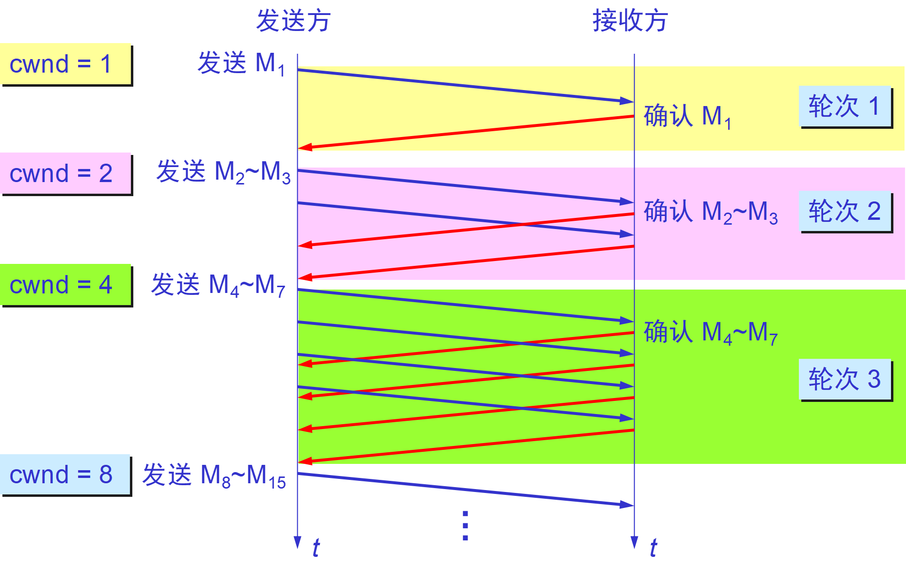
8.2.1.2 传输轮次
使用慢开始算法后，每经过一个传输轮次，拥塞窗口 cwnd 就加倍。
一个传输轮次所经历的时间其实就是往返时间 RTT。
“传输轮次”更加强调：把拥塞窗口 cwnd 所允许发送的报文段都连续发送出去，并收到了对已发送的最后一个字节的确认。
例如，拥塞窗口 cwnd = 4，这时的往返时间 RTT 就是发送方连续发送 4 个报文段，并收到这 4 个报文段的确认，总共经历的时间。
由此可见，慢开始的“慢”并不是cwnd的增长速率慢，而是指在TCP开始发送报文段时，只发送一个报文段，即设置cwnd = 1，目的是试探一下网络的拥塞情况，然后视情况再逐渐增大cwnd。
8.2.2 拥塞避免
为了防止拥塞窗口cwnd增长过大引起网络拥塞，还需要设置一个慢开始门限ssthresh状态变量，慢开始门限 ssthresh 的用法如下：
-
当 cwnd < ssthresh 时，使用慢开始算法。
-
当 cwnd > ssthresh 时，停止使用慢开始算法而改用拥塞避免算法。
-
当 cwnd = ssthresh 时，既可使用慢开始算法，也可使用拥塞避免算法。
拥塞避免算法的思路是让拥塞窗口 cwnd 缓慢地增大，即每经过一个往返时间 RTT 就把发送方的拥塞窗口 cwnd 加 1，而不是加倍，使拥塞窗口 cwnd 按线性规律缓慢增长。
无论在慢开始阶段还是在拥塞避免阶段，只要发送方判断网络出现拥塞（其根据就是没有按时收到确认），就要把慢开始门限 ssthresh 设置为出现拥塞时的发送方窗口值的一半（但不能小于2）。然后把拥塞窗口 cwnd 重新设置为 1，执行慢开始算法。
这样做的目的就是要迅速减少主机发送到网络中的分组数，使得发生拥塞的路由器有足够时间把队列中积压的分组处理完毕。
8.2.3 慢开始和拥塞避免算法的实现举例
当 TCP 连接进行初始化时，将拥塞窗口置为 1。下图中的窗口单位不使用字节而使用报文段。
慢开始门限的初始值设置为 16 个报文段，即 ssthresh = 16。
发送端的发送窗口不能超过拥塞窗口 cwnd 和接收端窗口 rwnd 中的最小值。我们假定接收端窗口足够大，因此现在发送窗口的数值等于拥塞窗口的数值。
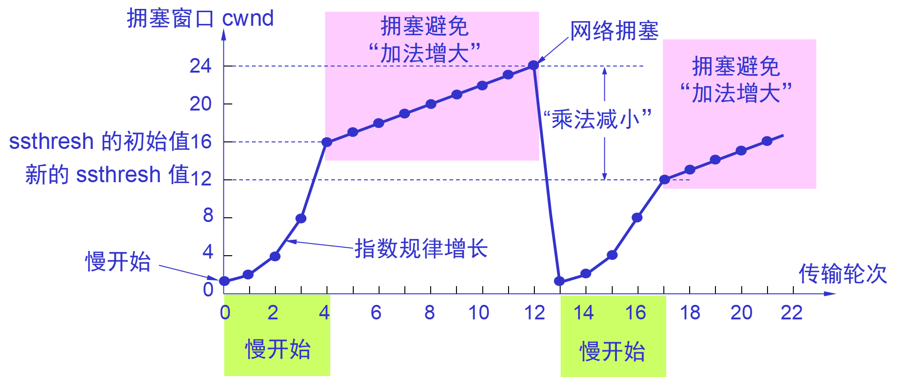
在执行慢开始算法时，拥塞窗口 cwnd 的初始值为 1，发送第一个报文段 M0。
发送端每收到一个确认 ，就把 cwnd 加 1。于是发送端可以接着发送 M1 和 M2 两个报文段。
接收端共发回两个确认。发送端每收到一个对新报文段的确认，就把发送端的 cwnd 加 1。现在 cwnd 从 2 增大到 4，并可接着发送后面的 4 个报文段。
发送端每收到一个对新报文段的确认，就把发送端的拥塞窗口加 1，因此拥塞窗口 cwnd 随着传输轮次按指数规律增长。
当拥塞窗口 cwnd 增长到慢开始门限值 ssthresh 时（即当 cwnd = 16 时），就改为执行拥塞避免算法，拥塞窗口按线性规律增长。
假定拥塞窗口的数值增长到 24 时，网络出现超时，表明网络拥塞了。
更新后的 ssthresh 值变为 12（即发送窗口数值 24 的一半），拥塞窗口再重新设置为 1，并执行慢开始算法。
当 cwnd = 12 时改为执行拥塞避免算法，拥塞窗口按按线性规律增长，每经过一个往返时延就增加一个 MSS 的大小。
8.2.3.1 乘法减小
“乘法减小“是指不论在慢开始阶段还是拥塞避免阶段，只要出现一次超时（即出现一次网络拥塞），就把慢开始门限值 ssthresh 设置为当前的拥塞窗口值乘以 0.5。
当网络频繁出现拥塞时，ssthresh 值就下降得很快，以大大减少注入到网络中的分组数。
8.2.3.2 加法增大
“加法增大”是指执行拥塞避免算法后，在收到对所有报文段的确认后（即经过一个往返时间），就把拥塞窗口 cwnd增加一个 MSS 大小，使拥塞窗口缓慢增大，以防止网络过早出现拥塞。
加法增大和乘法减小合在一起称为AIMD算法。
8.2.4 快重传
快重传算法首先要求接收方每收到一个失序的报文段后就立即发出重复确认。这样做可以让发送方及早知道有报文段没有到达接收方。
发送方只要一连收到三个重复确认就应当立即重传对方尚未收到的报文段。
不难看出，快重传并非取消重传计时器，而是在某些情况下可更早地重传丢失的报文段。
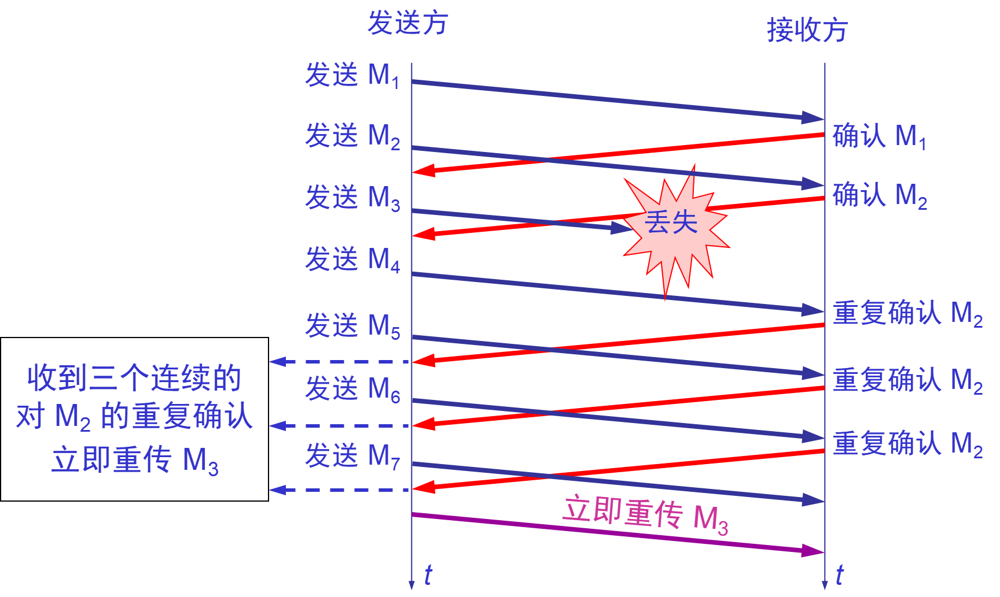
8.2.5 快恢复
-
当发送端收到连续三个重复的确认时，就执行“乘法减小”算法，把慢开始门限 ssthresh 减半。但接下去不执行慢开始算法。
-
由于发送方现在认为网络很可能没有发生拥塞，因此现在不执行慢开始算法，即拥塞窗口 cwnd 现在不设置为 1，而是设置为慢开始门限 ssthresh 减半后的数值，然后开始执行拥塞避免算法（“加法增大”），使拥塞窗口缓慢地线性增大。
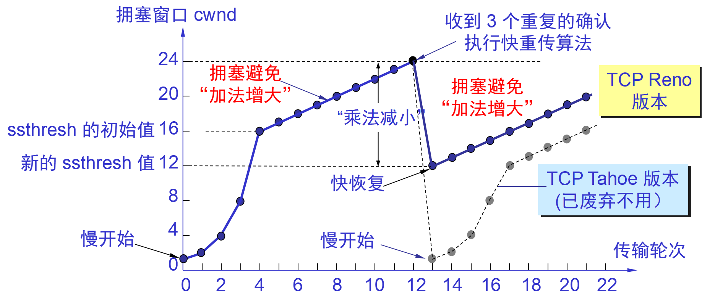
8.2.6 发送窗口的上限值
发送方的发送窗口的上限值应当取为接收方窗口 Rwnd 和拥塞窗口 Cwnd 这两个变量中较小的一个，即应按以下公式确定：
-
当 时，是接收方的接收能力限制发送窗口的最大值。
-
当 时，则是网络的拥塞限制发送窗口的最大值。
8.3 主动队列管理AQM
TCP拥塞控制和网络层采取的策略有密切联系。
重传会使TCP连接的发送端认为在网络中发生了拥塞。于是在TCP的发送端就采取了拥塞控制措施， 但实际上网络并没有发生拥塞。 网络层的策略对TCP拥塞控制影响最大的就是路由器的分组丢弃策略。
8.3.1 “先进先出”FIFO处理规则
路由器的队列通常都是按照“先进先出”FIFO (First In First Out) 的规则处理到来的分组。
当队列已满时，以后再到达的所有分组（如果能够继续排队，这些分组都将排在队列的尾部）将都被丢弃。这就叫做尾部丢弃策略 (tail-drop policy)。
路由器的尾部丢弃往往会导致一连串分组的丢失， 这就使发送方出现超时重传，使TCP进入拥塞控制的慢开始状态，结果使TCP连接的发送方突然把数据的发送速率降低到很小的数值。
更为严重的是，在网络中通常有很多的TCP连接， 这些连接中的报文段通常是复用在网络层的IP数据报中传送的。
在这种情况下，若发生了路由器中的尾部丢弃，就可能会同时影响到很多条TCP连接，结果使这许多TCP连接在同一时间突然都进入到慢开始状态。这在TCP 的术语中称为全局同步 (global syncronization)。
全局同步使得全网的通信量突然下降了很多，而在网络恢复正常后，其通信量又突然增大很多。
8.3.2 主动队列管理AQM
1998年提出了主动队列管理AQM (Active Queue Management)。
所谓“主动”就是不要等到路由器的队列长度已经达到最大值时才不得不丢弃后面到达的分组。这样就太被动了。应当在队列长度达到某个值得警惕的数值时（即当网络拥塞有了某些拥塞征兆时），就主动丢弃到达的分组。
提醒发送方放慢发送速率，会有可能减轻网络拥塞甚至不出现拥塞。
AQM 可以有不同实现方法，其中曾流行多年的就是随机早期检测RED（Random Early Detection）。
8.3.3 随机早期检测RED
使路由器的队列维持两个参数：队列长度最小门限THmin和最大门限Thmax 。 RED对每一个到达的分组量，都先计算当前平均队列长度LAV 。
- 若平均队列长度小于最小门限THmin，则将新到达的分组放入队列进行排队。
- 若平均队列长度超过最大门限THmax，则将新到达的分组丢弃。
- 若平均队列长度在最小门限THmin和最大门限THmax 之间，则按照某一概率p将新到达的分组丢弃。
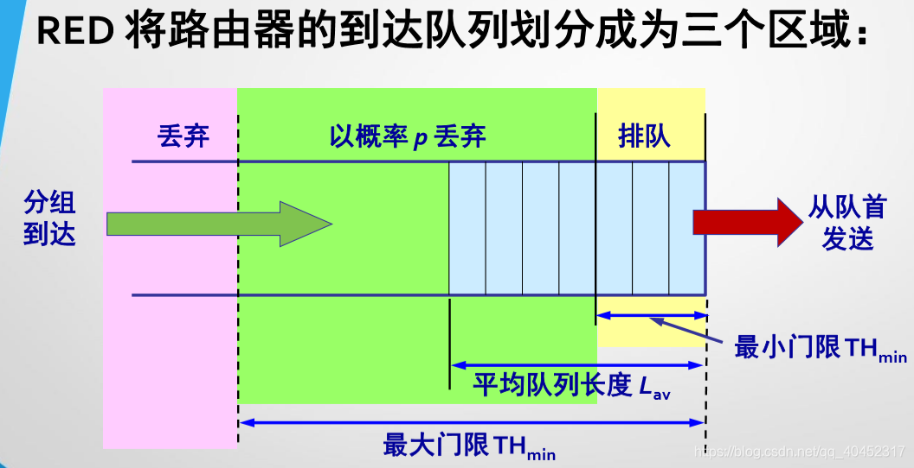
多年的实践证明，RED的使用效果并不太理想。 2015年公布的RFC 7567已经把RFC 2309列为陈旧的， 并且不再推荐使用RED。
对路由器进行主动队列管理AQM仍是必要的。 AQM实际上就是对路由器中的分组排队进行智能管理，而不是简单地把队列的尾部丢弃。 现在已经有几种不同的算法来代替旧的RED，但都还在实验阶段。
9 TCP的传输连接管理
传输连接就有三个阶段，即：连接建立、数据传送和连接释放。传输连接的管理就是使传输连接的建立能正常地进行。
传输建立过程中要解决以下三个问题：
-
要使每一方能够确知对方的存在。
-
要允许双方协商一些参数（如最大报文段长度，最大窗口大小，服务质量等）。
-
能够对传输实体资源（如缓存大小，连接表中的项目等）进行分配。
9.1 TCP 连接的建立
用三次握手建立 TCP 连接：
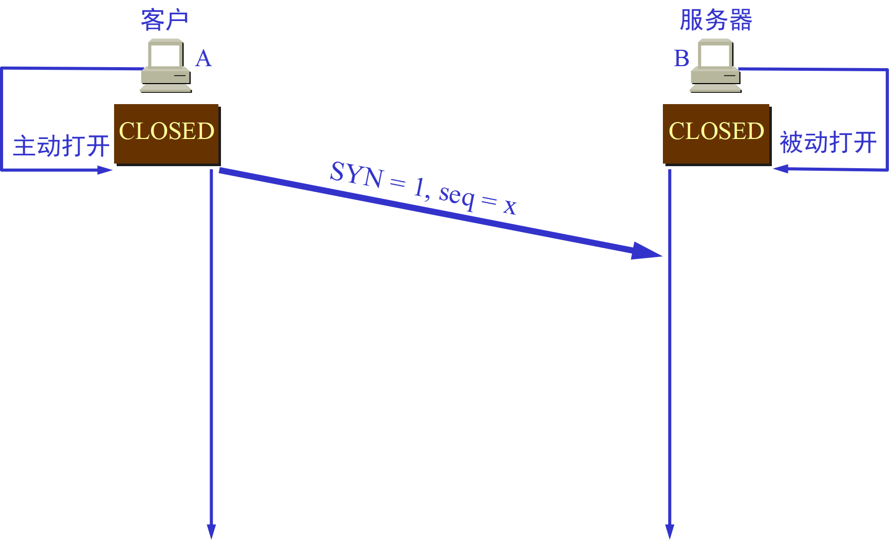
A 的 TCP 向 B TCP发出连接请求报文段，其首部中的同步位 SYN = 1，并选择序号 seq = x，表明传送数据时的第一个数据字节的序号是 x。
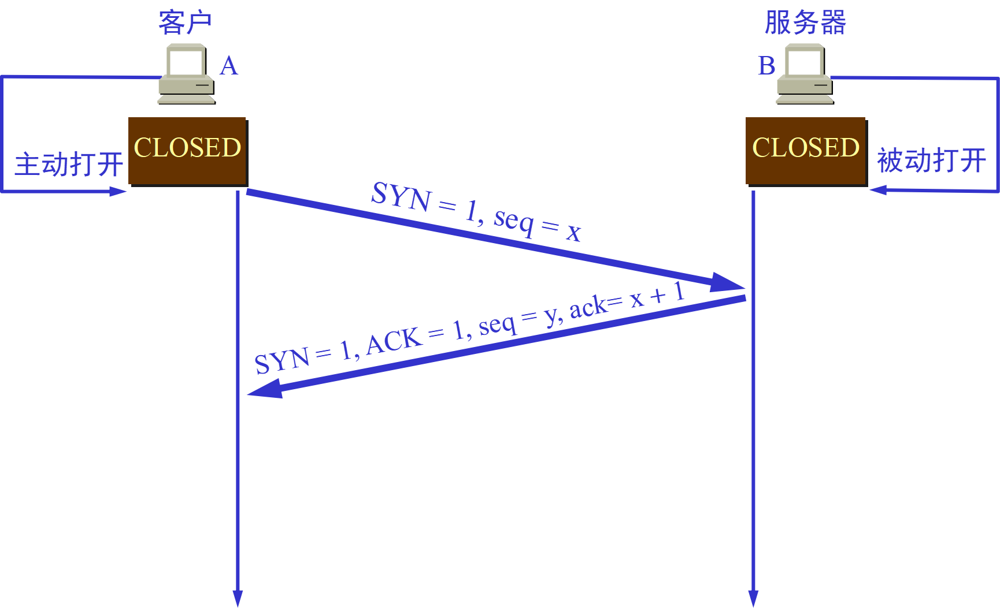
B 的 TCP 收到连接请求报文段后，如同意，则发回确认。
B 在确认报文段中应使 SYN = 1，使 ACK = 1，其确认号ack = x + 1，自己选择的序号 seq = y。
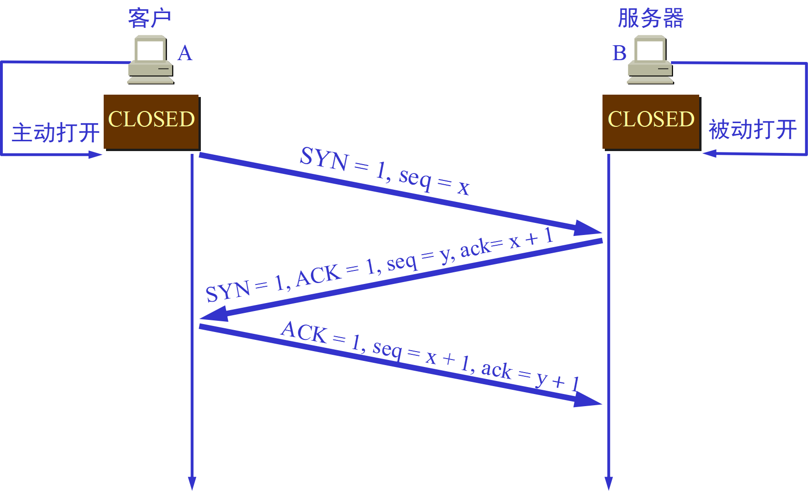
A 收到此报文段后向 B 给出确认，其 ACK = 1，确认号 ack = y + 1。
A 的 TCP 通知上层应用进程，连接已经建立。
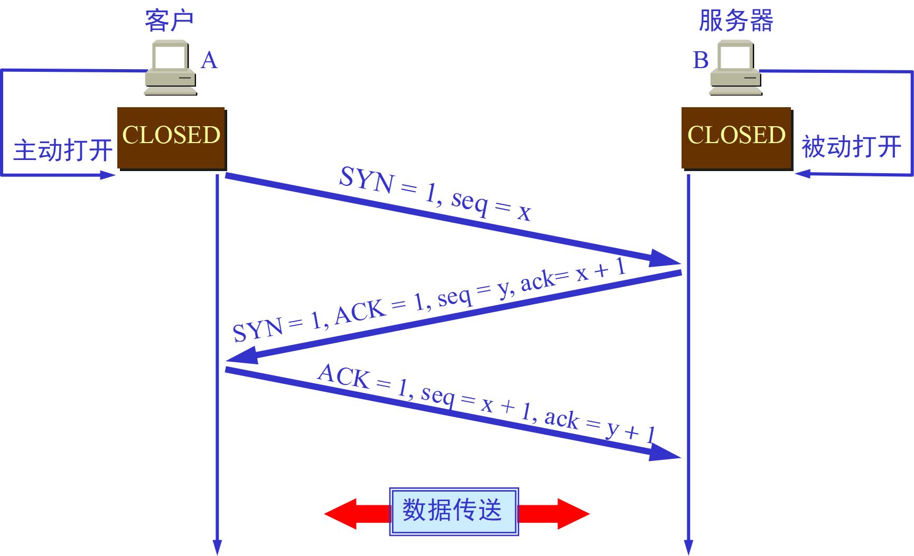
B 的 TCP 收到主机 A 的确认后，也通知其上层应用进程：TCP 连接已经建立。
用三次握手建立 TCP 连接的各状态：
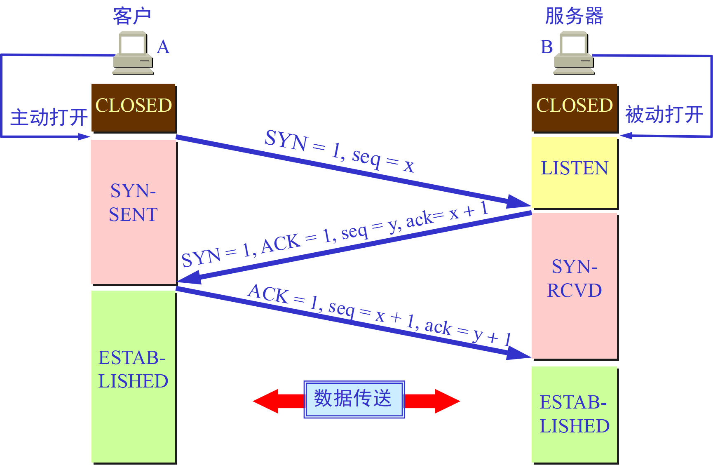
上述B发送给A的报文段也可以拆分成两个报文段，可以先发送一个确认报文段（ACK＝１，ack=x+1），然后再发送一个同步报文段（SYN=1，seq=y），这样就变成了四报文握手。
9.2 TCP 的连接释放
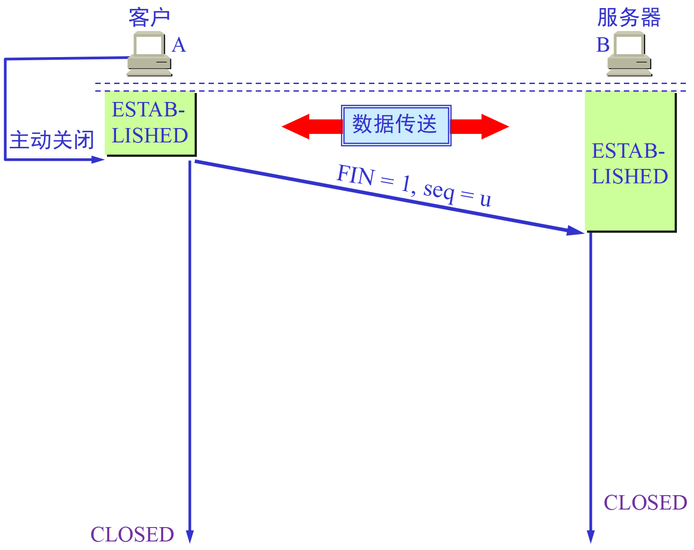
数据传输结束后，通信的双方都可释放连接。现在 A 的应用进程先向其 TCP 发出连接释放报文段，并停止再发送数据，主动关闭 TCP 连接。
A 把连接释放报文段首部的 FIN = 1，其序号 seq = u，等待 B 的确认。
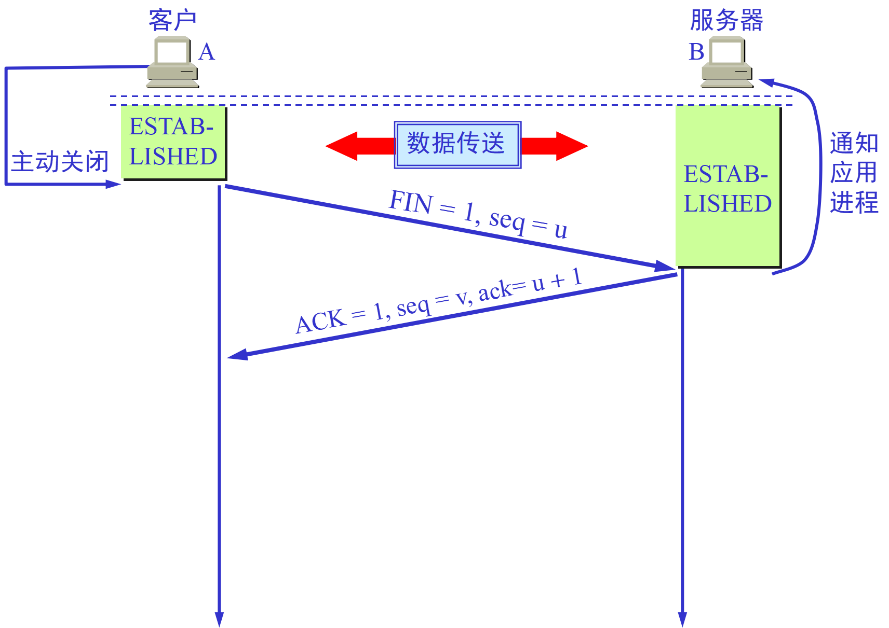
B 发出确认，确认号 ack = u + 1，而这个报文段自己的序号seq = v。TCP 服务器进程通知高层应用进程。
从 A 到 B 这个方向的连接就释放了，TCP 连接处于半关闭状态。B 若发送数据，A 仍要接收。
一个方向的连接是什么意思？发送窗口没了？
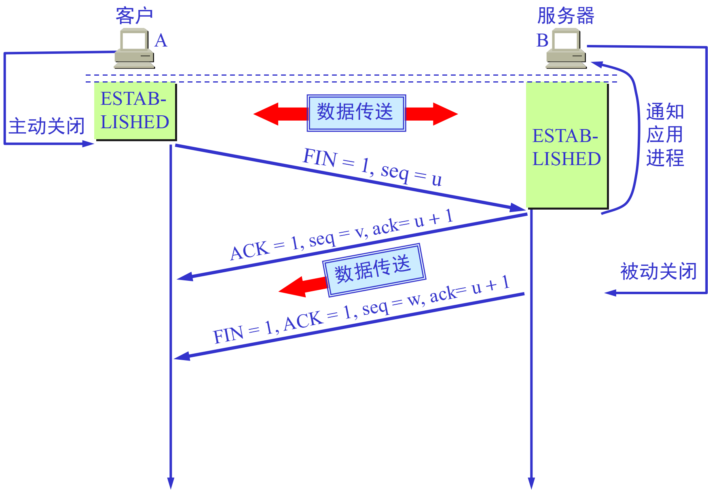
若 B 已经没有要向 A 发送的数据，其应用进程就通知 TCP 释放连接。
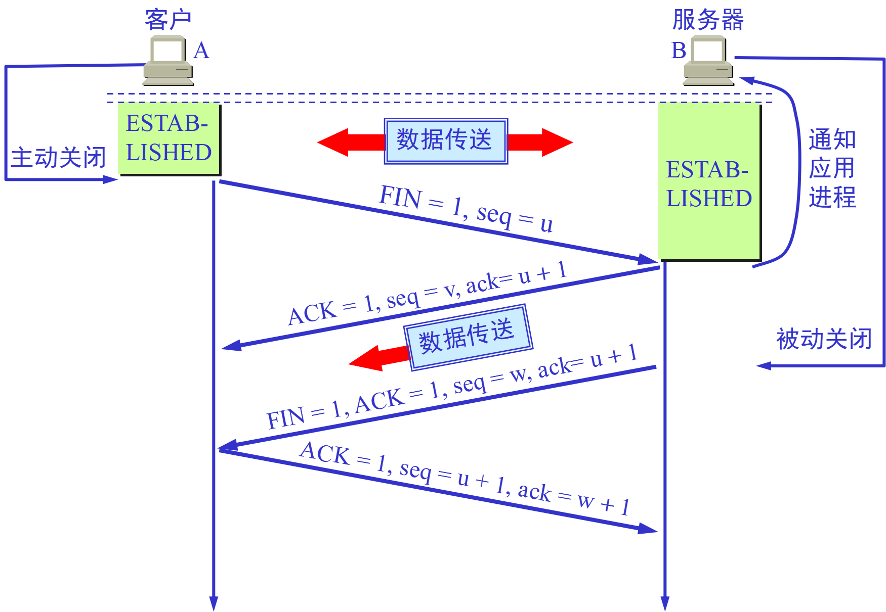
A 收到连接释放报文段后，必须发出确认。
在确认报文段中 ACK = 1，确认号 ack = w + 1，自己的序号 seq = u + 1。
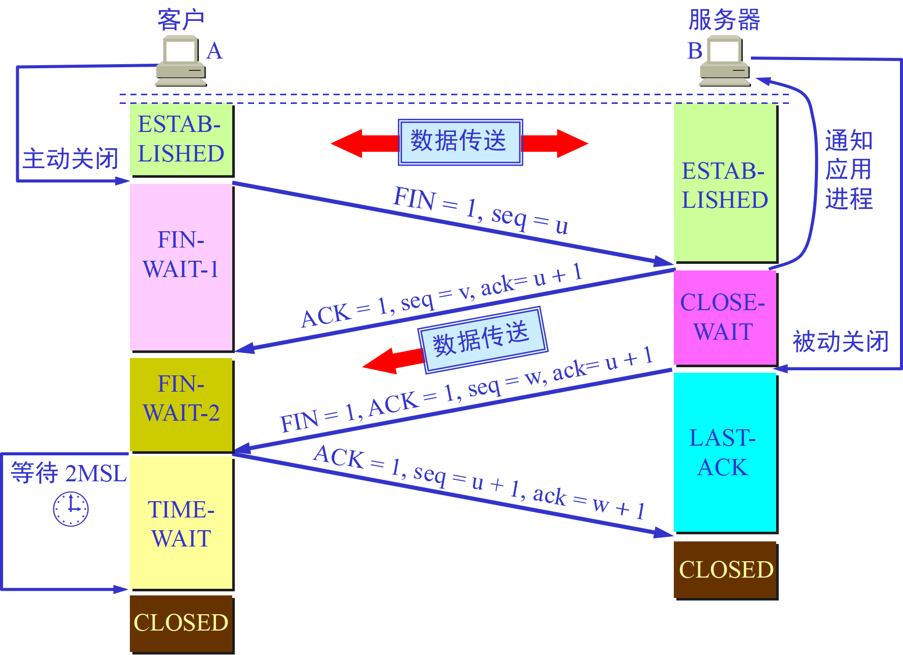
TCP 连接必须经过时间 2MSL 后才真正释放掉。
-
为了保证 A 发送的最后一个 ACK 报文段能够到达 B。
-
防止 “已失效的连接请求报文段”出现在本连接中。A 在发送完最后一个 ACK 报文段后，再经过时间 2MSL，就可以使本连接持续的时间内所产生的所有报文段，都从网络中消失。这样就可以使下一个新的连接中不会出现这种旧的连接请求报文段。
除了时间等待计时器外，TCP还设有一个保活计时器，防止另一方突然下线。
9.3 TCP 的有限状态机
TCP 有限状态机的图中每一个方框都是 TCP 可能具有的状态。
每个方框中的大写英文字符串是 TCP 标准所使用的 TCP 连接状态名。状态之间的箭头表示可能发生的状态变迁。
箭头旁边的字，表明引起这种变迁的原因，或表明发生状态变迁后又出现什么动作。
图中有三种不同的箭头。
-
粗实线箭头表示对客户进程的正常变迁。
-
粗虚线箭头表示对服务器进程的正常变迁。
-
另一种细线箭头表示异常变迁。
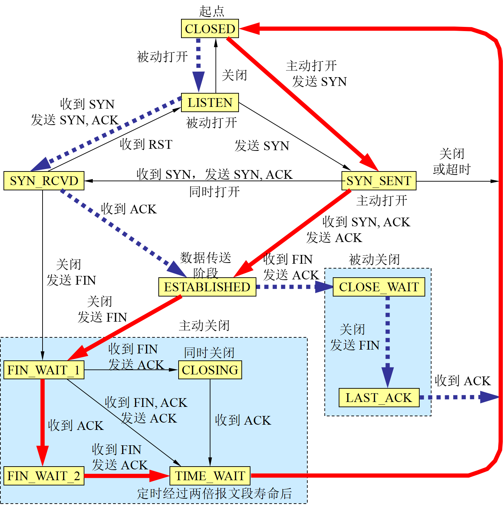
 微信
微信 支付宝
支付宝